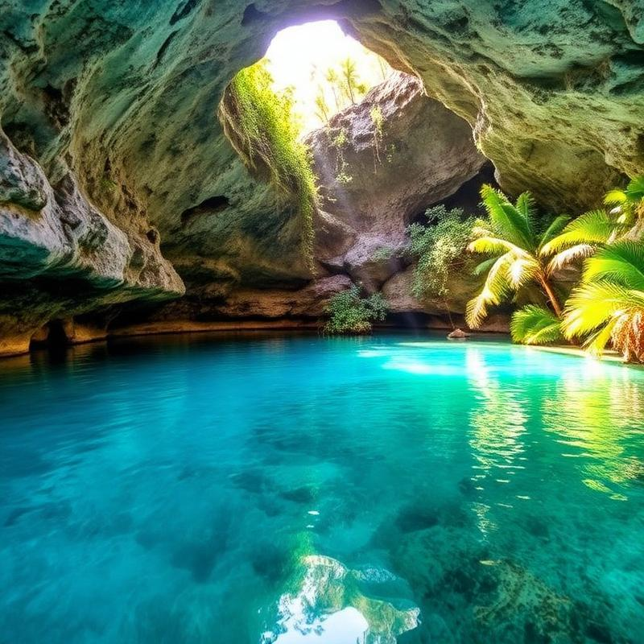
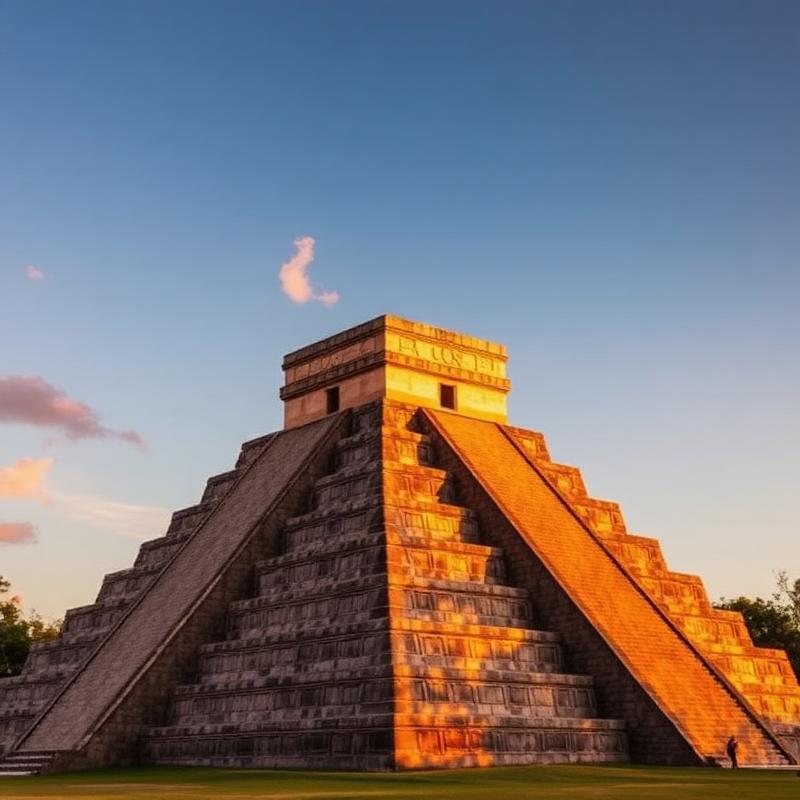
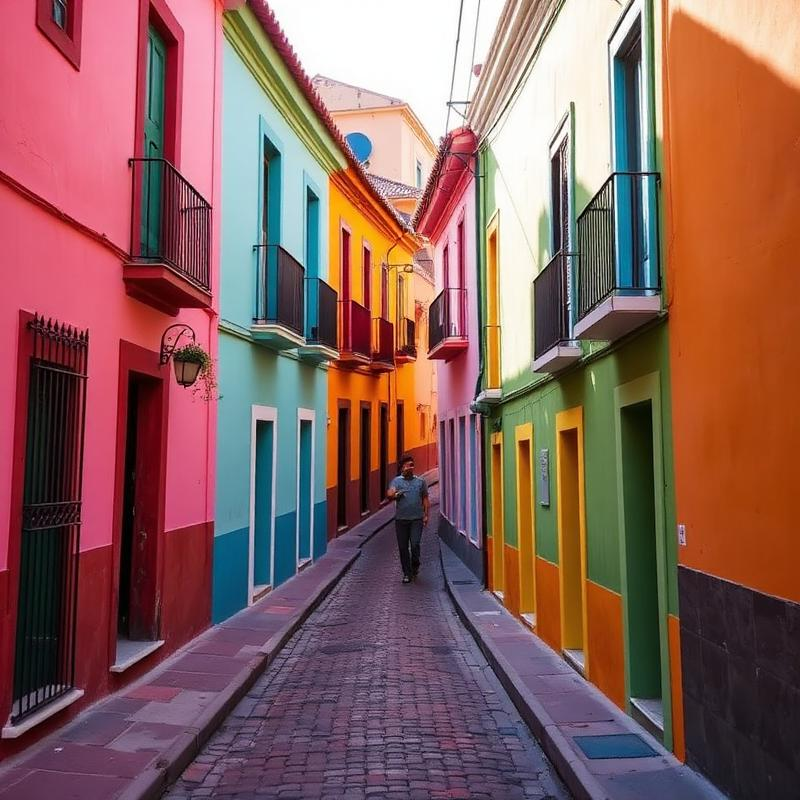
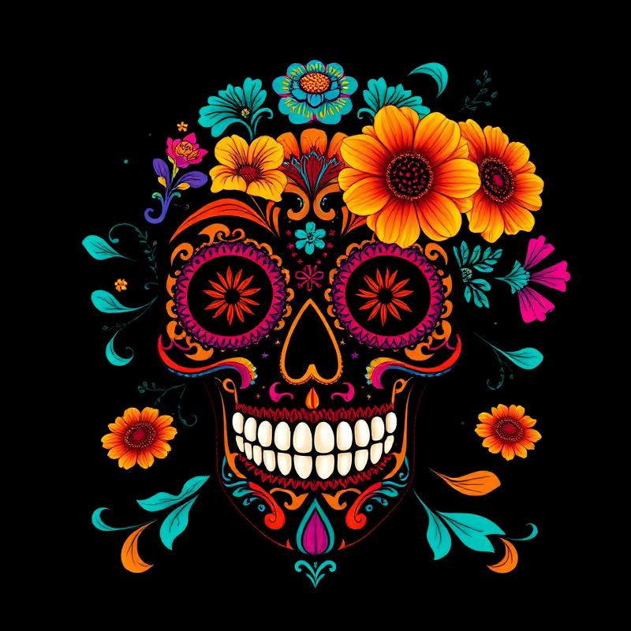
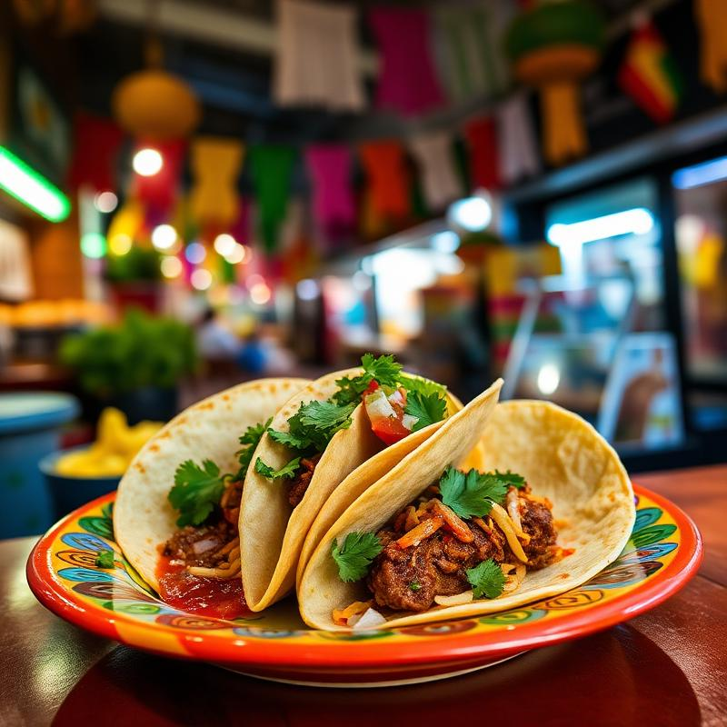

Cenotes de Yucatán
Piscinas naturais sagradas dos Maias.
Cores vibrantes, sabores intensos e uma cultura milenar.

Piscinas naturais sagradas dos Maias.

Uma das Sete Maravilhas do Mundo Moderno.

A cidade mais colorida do México.

